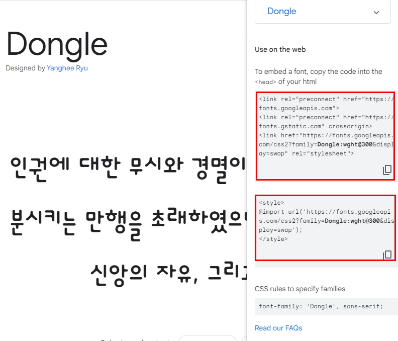

07-1. 글꼴 관련 스타일
1. 단위를 사용하여 글자 크기 지정하기(font-size)
| 종류 | 설명 | 비고 |
|---|---|---|
| em | 부모 요소에서 지정한 글꼴의 대문자 M의 너비를 기준(1em)으로 한 후 비율값 지정. | 1em: 16px |
| rem | 문서 시작 부분(root)에서 지정한 크기를 기준(1rem)으로 한 후 비율값을 지정. | |
| ex | 해당 글꼴의 소문자 x의 높일를 기준(1ex)으로 한 후 비율값을 지정. | |
| px | 모니터의 1픽셀을 기준(1px)으로 한 후 비율값을 지정. | |
| pt | 포인트라고 하며, 일반 문서에서 많이 사용. | |
| %(백분율) | 부모 요소의 글자크기를 기준으로 계산. 부모 요소의 글꼴크기가 font-size: 16px; 처럼 단위로 지정되어 있어야함. |
2. 글자 굵길를 지정하는 font-weight속성
①normal: 기본값, 400
②bold: 굵게, 700
③bolder: 원래보다 더 굵게
④lighter: 원래보다 더 가늘게
⑤100 ~ 900: 100~900사이의 굵기를 표현하며 100은 가장 가늘게 900은 가장 굵게
07-2. 웹 폰트 사용하기
font-family 속성으로 글꼴을 지정할 때 글꼴이 사용자 시스템에 없을 경우를 대비해 글꼴을 2~3개 지정. 웹 폰트를 사용하면 사용자 시스템에 없는 글꼴도 사용 가능.
웹 폰트 업로드 하고 사용하기
구글 웹 폰트처럼 인터넷 사이트에서 제공해 주는 경우 링크해서 사용하지만, 그렇지 않은 글꼴이거나 자신이 가지고 있는 TTF폰드를 웹폰드로 변환해야함.
파일명.ttf: 컴퓨터에서 사용하는 글꼴. 트루타입(True Type). 크기가 커서 웹에서 사용하기 적절하지 않음.
웹에 적합한 글꼴 파일: .eot, .wofff, woff2
📃 LINK: 영문, 한글 웹폰트 변환사이트
font-family: 글꼴 이름;
src: 글꼴 파일[글꼴 파일, 글꼴파일, ...];
}
* 대부분의 모던 브라우저에서 지원하는 .ttf 포멧을 먼저 선언하고 .woff 포멧은 그 후에 선언
예제
@font-face {
font-family: 'Ostrich'; /* 폰트 이름 */
src: local('Ostrich Sans'),
url('fonts/ostrich-sans-bold.woff') format('woff'),
url('fonts/ostrich-sans-bold.ttf') format('truetype'),
url('fonts/ostrich-sans-bold.svg') format('svg');
}
구글 폰트 사용하기
안녕 나는 구글폰트 동글글씨체야!밑의 빨강박스 안의 코드를 적용해서 보이는중! 
07-3. 텍스트 관련 스타일
1. 글자색, color
① 16진수: #기호 다음에 6자리의 16진수로 표시.
앞에서부터 두 자리씩 묶어 #RRGGBB 로 표시.
RR자리는 빨강생, GG자리는 초록색, BB자리는 파란색 의 양을 표시.
00은 각 색상마다 하나도 섞이지 않음, ff는 00부터 해당색이 가득 섞였음은 표시.
#000000(검은색)부터 #ffffff(흰색)까지 표현 가능.
#000ff -> #00f: 두 자리씩 중복될 경우 줄여서 표기 가능.
② rgb, rgba: red, green, blue, alpha(불투명도)
0 (하나도 섞이지 않았을 때 ) ~ 255 (가득 섞였을 때) 사이의 값.
③ hsl, hsla: hue(색상), saturation(채도), lightness(명도), alpha(불투명도). ㄷ
④ red, yellow, black등 영문명으로 작성.
2. 텍스트 정렬, text-align
문단의 텍스트 정렬 방법 지정.
| 종류 | 설명 |
|---|---|
| start | 현재 텍스트 줄의 시작 위치에 맞추어 문단을 정렬. |
| end | 현재 텍스트 줄의 끝 위치에 맞추어 문단을 정렬. |
| left | 왼쪽에 맞추어 문단을 정렬. |
| right | 오른쪽에 맞추어 문단을 정렬. |
| center | 가운데에 맞추어 문단을 정렬. |
| justify | 양쪽에 맞추어 문단을 정렬. |
| match-parent | 부모 요소를 따라 문단을 정렬. |
3. 줄 간격 조절, line-height
줄 간격은 정확한 단위로 크깃값 지정
문단의 글자 크기를 기준으로 몇 배수인지 백분율로 지정
ㄴ 글자 크기가 12px인 문단의 줄 간격을 2.0으로 했다면 실제 줄 간격은 글자 크기의 2.0배인 24px이 되며 백분율도 같은 식을로 계산
보통 줄간격은 글자 크기의 1.5~2배면 적당.
* 문단이 한줄일때 line-height의 속성값을 height속성값과 똑같이 설정하면 세로로 가운데 정렬됨.
p {font-size: 12px; line-height: 24px;}
p {font-size: 12px; line-heigh: 2.0;}
p {font-size: 12px; line-heighL 200%;}
4. 텍스트 데코, text-decoration
text-decoraation: none;
// 밑줄 표시
text-decoration: underline;
// 윗줄 표시
text-decoration: overline;
// 취소선 표시
text-decoration: line-through;
5. 그림자 효과, text-shadow
6. 대소문자변환, text-transform
| 종류 | 설명 | 비고 |
|---|---|---|
| none |
줄을 표시하지 않음. Hollo, World! |
|
| capitalize |
첫 번째 글자를 대문자로 변환. Hollo, World! |
|
| uppercase |
모든 글자를 대문자로 변환. Hollo, World! |
|
| lowercase |
모든 글자를 소문자로 변환. Hollo, World! |
|
| full-width |
가능한 한 모든 문자를 전각 문자로 변환. Hollo, World! |
'전각문자': 가로와 세로의 길이 비율이 같은 글자. '반각문자': 가로와 세로의 길이 비율이 1:2인 글자. |
7. 글자간격 조걸, letter-spacing / word-spacing
letter-spancing: 글자와 글자 사이 간격 조절.(자간)
word-spacing: 단어와 단어 사이 간격 조절.
px, em, 로 크깃값 조절.
너는 정말 특별해 전혀 독하지 않은데 | letter-spacing:0.2em
너는 정말 특별해 전혀 독하지 않은데 | letter-spacing:0.5em
너는 정말 특별해 전혀 독하지 않은데 | word-spacing: -10px;
너는 정말 특별해 전혀 독하지 않은데 | word-spacing: 10px;
07-4. 목록 스타일
1. 블릿 모양과 번호 스타일, list-style-type
- disc
- 채운 원 모양
- circle
- 빈 원 모양
- square
- 채운 사각형 모양
- decimal
- 1부터 시작하는 10진수
- decimal-leading-zero
- 앞에 0이 붙는 10진수
- lower-roman
- 로마 숫자 소문자
- upper-roman
- 로마 숫자 대문자
- lower-alpha | lower-latin
- 알파벳 소문자
- upper-alpha | upper-latin
- 알파벳 대문자
- none
- 블릿이나 숫자가 없음
2. 블릿 대신 원하는 이미지, list-style-image
- list-style-image: url(../images/img07_2.png);
- 블릿에 들어갈 원하는 이미지는 블릿 크기만큼 작아야함.
- 속성값 none, 블릿 숫자 없음.
3. 목록 들여 쓰기, list-style-position
- outside
- 기본값
- inside
- 들여쓰기
4. 목록스타일 속성 축약형
ul {list-style-type: none;} --> ul {list-style: none;}
// 소문자 목록 만듣고 들여쓰기
ol {list-style-type: lower-alpha; list-style-position: inside;} --> ol {list-sytle: lower-alpha inside;}